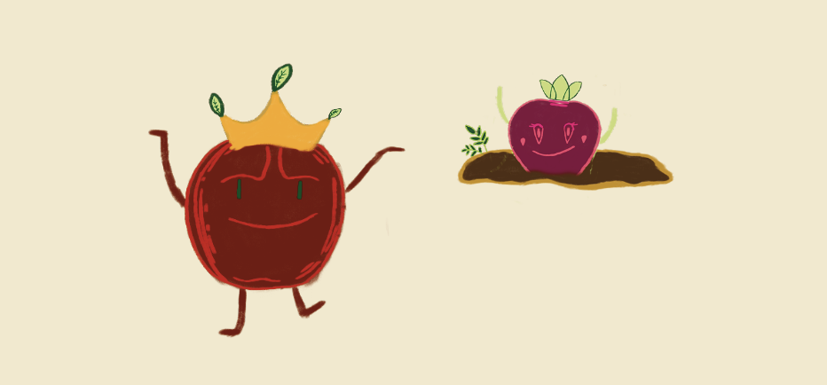

Ontmoet onze boeren
Onze boeren gebruiken geen chemisch-synthetische bestrijdingsmiddelen, maar wel echte kunstmest. Dit voorkomt uitputting van de bodem. Niets gaat verloren, en alles wordt benut. Wat niet geschikt is voor menselijke consumptie, wordt aan de dieren gegeven.
Hoe kan ik zelf duurzaam eten verbouwen
Sla, tomaat en komkommer zijn een uitstekende en duurzame keuze om mee te beginnen als je wilt gaan planten. Zorg ervoor dat de grond goed vochtig is en vrij van takjes en plantenresten.
Zorg ervoor dat, wanneer je de zaadjes plant, er voldoende licht op kan schijnen. Is het in deze tijd van het jaar niet warm genoeg? Dan kun je altijd een kleine kas bouwen.
Heb je veel last van beestjes? Geen zorgen, niet alle insecten beschadigen je voedsel. Sommige insecten helpen juist bij de groei en het bemesten of bestuiven van je planten.
Mocht je toch problemen ervaren, dan kun je altijd hekjes plaatsen. Deze helpen niet alleen om beestjes buiten te houden, maar ook om je planten in de juiste richting te laten groeien.